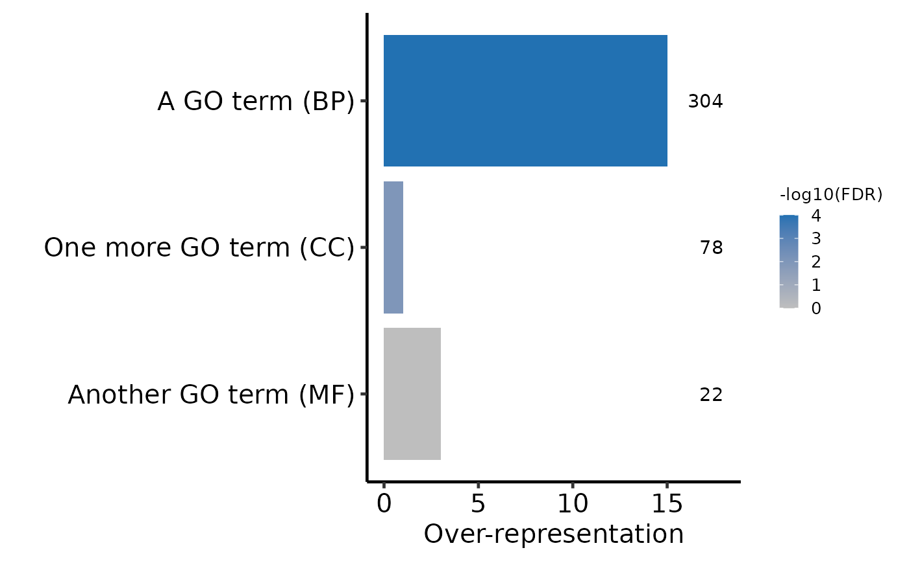

Plot selected GO terms
plot_go.RdThis function plots a set of GO terms of interest.
be run after get_enriched_go and estimate_go_overrep.
To avoid plotting too many terms, you may wish to use
remove_redundant_go first too. A warning is shown if you try
and plot more than 100 GO terms.
Usage
plot_go(
obj,
term_col = "term_short",
ontology_col = "ontology",
annotate_n = TRUE,
make_terms_unique = TRUE
)Arguments
- obj
data.framecontaininggoseqresults as generated byget_enriched_gothenestimate_go_overrep. See below for an example.- term_col
charactercolumn name for GO term description.- ontology_col
charactercolumn name for GO term ontology.- annotate_n
logicalInclude the number of features per term- make_terms_unique
logicalMake GO terms unique. Useful if truncated GO terms are being plotted (i.e. numDEInCat column) in the plot? (Default isTRUE)
Examples
# Make a data.frame of the correct format
df <- data.frame(
"term_short" = c("A GO term", "Another GO term", "One more GO term"),
"ontology" = c("BP", "MF", "CC"),
"over_represented_adj_pval" = c(0.0001, 1, 0.01),
"adj_overrep" = c(15, 3, 1),
"numDEInCat" = c(304, 22, 78)
)
# Plot the GO terms
plot_go(df)
